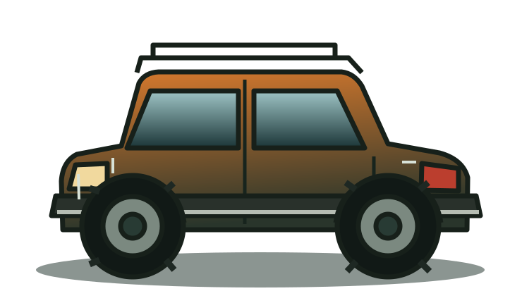
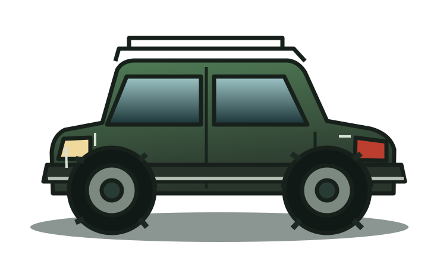
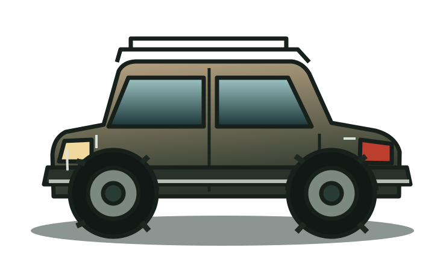

PLUS QU’UNE APP, UN COMPAGNON D’AVENTURE
BEAVER4X4AI
L’aventure tout-terrain
dans ta poche.
Prépare tes sorties, gère ton véhicule, explore de nouveaux chemins et retrouve une communauté de passionnés de tous les 4x4.
Sortie prévue fin novembre 2026 →Date prévisionnelle susceptible d’évoluer.
TOUS LES 4X4, TOUTES LES AVENTURES
Une application.
Tout un univers 4x4.
BEAVER COPILOTE
Un copilote intelligent pour chaque aventure.
Entretien, préparation et diagnostic : pose tes questions et retrouve des informations utiles sur ton véhicule.
- Questions et conseils d’entretien
- Pistes de diagnostic adaptées
- Recherche de pièces compatibles selon disponibilité
Aperçu illustratif. Les fonctionnalités peuvent évoluer. Les conseils ne remplacent pas l’avis d’un professionnel.
GARAGE
Ton 4x4, tout en un seul endroit.
Enregistre ton véhicule, suis son entretien, ajoute ses équipements et garde son historique.
TRAILS WORLD
Des trails partout dans le monde.
Une carte pour découvrir et partager des parcours, bivouacs, rassemblements et salons, enrichie par la communauté.
Respecte les réglementations locales de circulation et l’environnement.
LE CLUB
Une communauté de passionnés.
Partage tes photos, tes sorties et tes conseils. Des passionnés de Toyota, Jeep, Nissan, Land Rover, Suzuki, Mitsubishi, Ford et bien d’autres.
Rejoindre l’aventure →L’AVENTURE ARRIVE
Rendez-vous fin novembre 2026.
Sortie prévue sur l’App Store. La date reste prévisionnelle et pourra évoluer.